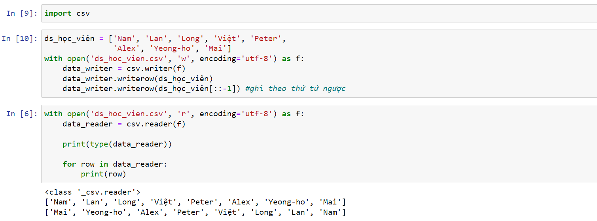
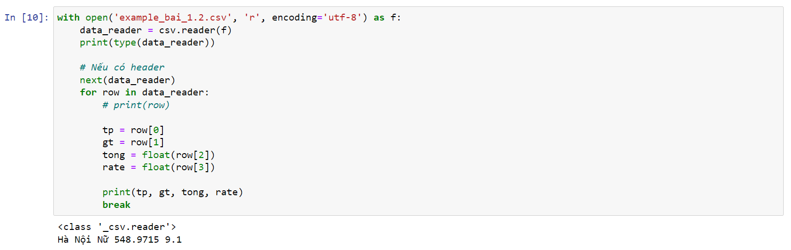

ds = []
print( len(ds) )
for i in range(4)
Giải thích: i chạy từ 0 -> 3
ds_học_viên = ["Nam", "Lan", "Mai", "Việt"]
print(ds_học_viên[0]) => Nam
print(ds_học_viên[1]) => Lan
print(ds_học_viên[-1]) => Việt
print(ds_học_viên[-2]) => Mai
**** Giải thích:index đánh số từ 0 từ trái qua phải, đánh -1 từ phải qua trái
ds_học_viên = ["Nam", "Lan", "Mai", "Việt"]
ds_nhóm1 = ds_học_viên[:2]
print( ds_nhóm1) => ['Nam', 'Lan']
**** Giải thích: lấy phần tử từ đầu đến phần tử index 1. 2 là stop positsion.
ds_nhóm2 = ds_học_viên[2:4]
print(ds_nhóm2) => ["Mai", "Việt"]
**** Giải thích : lấy từ vị trí index 2 đến 3
ds_nhóm3 = ds_học_viên[1:]
print(ds_nhóm3) => ["Lan", "Mai", "Việt"]]
**** Giải thích : lấy từ vị trí index 1 đến hết list
ds_nhóm4 = ds_học_viên[-4:0]
print(ds_nhóm3) => ["Nam", "Lan", "Mai", "Việt"]
**** Giải thích : lấy từ vị trí index -4 đến hết list. ( Với list này -4 tương đương index = 0 )
Cách 1: ds_học_viên = ["Nam", "Lan", "Mai", "Việt"]
ds_học_viên.reverse()
print( ds_học_viên ) => ['Việt', 'Mai', 'Lan', 'Nam']
**** Giải thích: Thực hiện đảo trên danh sách hiện có
Cách 2: ds_hoc_vien_đảo = reversed( ds_học_viên )
print( ds_hoc_vien_đảo ) => ['Việt', 'Mai', 'Lan', 'Nam']
**** Giải thích: Trả về danh sách đảo, danh sách gốc không bị ảnh hưởng
Cách 3: ds_học_viên_đảo = ds_học_viên[-1::-1]
print(ds_học_viên_đảo) => ['Việt', 'Mai', 'Lan', 'Nam']
**** Giải thích: ###
ds_học_viên = ["Nam", "Lan", "Mai", "Việt"]
ds_học_viên = ds_học_viên + ["Peter"]
ds_học_viên.insert(2, "Long") => thêm vào vị trí index = 2
ds_học_viên.append("Alex") => Thêm vào cuố list
ds_học_viên.extend(["Yeong-ho", "Mai"]) => thêm nhiều phần từ vào cuối list
ds_học_viên = ["Nam", "Lan", "Mai", "Việt"]
ds_học_viên.remove("Mai") => xóa phần tử có giá trị là "Mai"
ds_học_viên.pop(3) => xóa phần tử tại index = 3
del(ds_học_viên[4]) => xóa phần tử tại index = 4
ds_học_viên = ["Nam", "Lan", "Mai", "Việt"]
ds_học_viên[4] = "Trung Anh"
Giải thích: sửa phần tử index= 4 thành Trung Anh
ds_học_viên = ["Nam", "Lan", "Mai", "Việt"]
index = ds_học_viên.index("Nam")
print( index ) => 0
Giải thích: Tìm ví trí của phần tử "Nam" => kết quả là 0
ds_chi_tieu = [5, 6, 3, 7, 3, 8]
chi_tieu_max = max( ds_chi_tieu )
chi_tieu_min = min( ds_chi_tieu ) => 0
ds_chi_tieu = [5, 6, 3, 7, 3, 8]
Cách 1: index = ds_chi_tieu.index(7)
print( index )
Cách 2:
if 4 in ds_chi_tieu:
print(ds_chi_tieu.index(4))
else:
print("Không có số 4 trong
ds_chi_tieu")
ds_chi_tieu = [5, 6, 3, 7, 3, 8]
Cách 1: trả về danh sách mới
ds_chi_tieu_sort = sorted(ds_chi_tieu)
ds_chi_tieu_reverse = sorted(ds_chi_tieu, reverse=True) => sắp xếp giảm dần
Cách 2: sort trực tiếp trên danh sách gốc
ds_chi_tieu.sort()
ds_chi_tieu.sort(reverse=True) => sắp xếp giảm dần
Sort Zip:
L1 = [9,3,5,7]
L2 = [4,2,8,6]
sorted(zip(L1,L2), key=lambda x: x[0]) => sort dựa theo phần tử 0 của zip, sửa thành z[1] để sort theo phần tử 1
[(3, 2), (5, 8), (7, 6), (9, 4)]
Có thể sắp xếp mảng hay số cũng được
ds_chi_tieu = [5, 6, 3, 7, 3, 8]
import random
random.shuffle(ds_chi_tieu)
Hoặc random.shuffle(ds_chi_tieu, lambda : 0.05)
** Giải thích : khi không truyền function tại tham số thứ 2 vào, mặc định nó sẽ là random, nếu gán function trả về giá trị cố định thị chạy lại hàm random.shuffle vẫn ra giá trị giống nhau
Có thể sắp xếp mảng hay số cũng được
import random
ds_học_viên = ['Nam', 'Lan', 'Long', 'Việt', 'Peter', 'Alex', 'Yeong-ho', 'Mai']
ds_nhom1 = random.sample(ds_học_viên, k=3)
***Giải thích: lấy ngẫu nhiên k phần tử trong danh sách gốc ( ko làm ảnh hưởng tới danh sách gốc )
import random
ds_học_viên = ['Nam', 'Lan', 'Long', 'Việt', 'Peter', 'Alex', 'Yeong-ho', 'Mai']
a = enumerate(ds_học_viên)
for item in a: print(item)
Output:
(0, 'Nam')
(1, 'Lan')
(2, 'Long')
(3, 'Việt')
(4, 'Peter')
(5, 'Alex')
(6, 'Yeong-ho')
(7, 'Mai')
***Giải thích: đánh index cho các item trong list
***Giải thích: có một vài mode cơ bản như sau
r for reading – The file pointer is placed at the beginning of the file. This is the default mode.
r+ Opens a file for both reading and writing. The file pointer will be at the beginning of the file.
w Opens a file for writing only. Overwrites the file if the file exists. If the file does not exist,
creates a new file for writing.
w+ Opens a file for both writing and reading. Overwrites the existing file if the file exists. If
the file does not exist, it creates a new file for reading and writing.
see
more
Ví dụ 1
Ví dụ 2
***Giải thích: có một vài mode cơ bản như sau
r for reading – The file pointer is placed at the beginning of the file. This is the default mode.
r+ Opens a file for both reading and writing. The file pointer will be at the beginning of the file.
w Opens a file for writing only. Overwrites the file if the file exists. If the file does not exist,
creates a new file for writing.
w+ Opens a file for both writing and reading. Overwrites the existing file if the file exists. If
the file does not exist, it creates a new file for reading and writing.
see
more